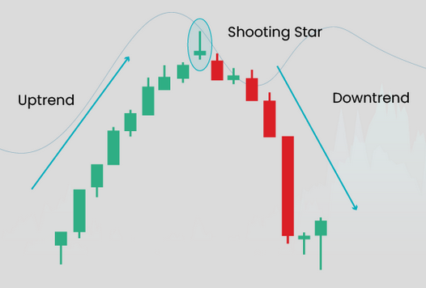
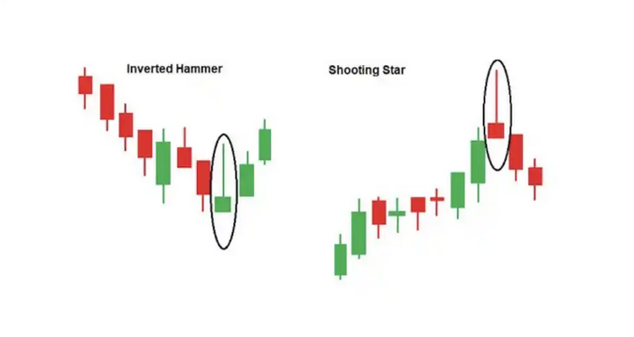

← Volver
Estrella Fugaz (Shooting Star)

Descripción simple
Cuerpo pequeño con larga mecha superior; rechazo de precios altos, posible reversión bajista.
Ejemplos
- Tras rally aparece vela con mecha superior grande y cuerpo pequeño abajo.
- En intradía, una shooting star sobre resistencia suele anticipar retroceso.
Imagen de ejemplo (vela)

Interpretación y consejos
- Confirmar siempre con la vela siguiente o volumen mayor.
- Usar en contexto (soportes/resistencias, tendencia previa).
- Las señales no son 100% fiables; combinar con gestión de riesgo.